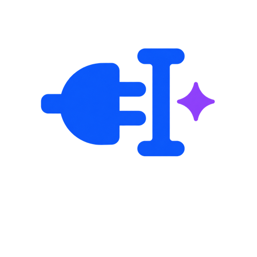

WELCOME TO CHATOU
在任何地方，写出更好的表达。
系统级 AI 输入法。输入中文，按 F8 即可翻译或改写；Enter 始终保持原有发送和换行功能。
全局可用浏览器、Word、微信等
自选模型DeepSeek、OpenAI 等
本地直连BYOK，无中转服务器
安装位置正在读取默认目录…
继续即表示你同意按开源许可证使用本软件。
UNINSTALL
卸载 Chatou？
将移除应用与系统注册项，但保留用户字典和个人配置，方便以后重新安装。
%APPDATA%\Rime 中的数据不会被删除。SETTING THINGS UP
正在准备 Chatou
准备文件…
READY TO TYPE
安装完成。
下一步填入 API Key。默认支持 DeepSeek，也可以连接 OpenAI、Moonshot、Ollama 等兼容服务。
Win + Space 切换输入法，输入中文后按 F8。
RESTART REQUIRED
安装完成，需要重启。
部分旧文件正在使用中，新版本已排队替换。重启 Windows 后会自动生效。
不重启仍可使用旧版，但新功能需要重启后加载。